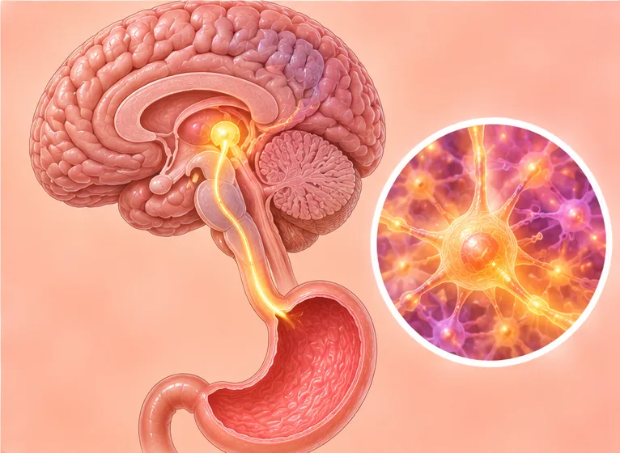

Anorexia
Also called anorexia nervosa: an eating disorder with a strong fear of gaining weight
What it is
A person eats far too little out of a strong fear of gaining weight. It is a mental health condition, not vanity or a choice, and it needs a doctor's care.
- Eating and the whole body
- Often starts in the teen years
- Eating far too little
- Which doctor
- Family doctor, psychiatrist; a dietitian and psychologist often help too
- Common in
- Mostly teens and young adults; anyone can get it, including men and boys
- Contagious
- No
- Course
- Can become serious if left alone; with a care team, many people get better over time
Common signs

Always feeling coldCold intolerance
More signs
- Eating very little, skipping meals, or counting every bite
- A strong fear of gaining weight, even when very thin
- Seeing the body as too big, or checking weight and the mirror often
- Hiding food, exercising too much, or avoiding meals with others
Why it happens

The cause is not fully knownIdiopathic 
Runs in the familyGenetic predisposition
Other causes
- Pressure to be thin from social media, sport, dance, modelling or people around
- Perfectionism, low self-esteem, or a hard time such as bullying or loss
- Strict dieting can sometimes be the start
See a doctor first if
- Fainting, chest pain, a very slow or uneven heartbeat, or trouble breathing: call 999
- Thoughts of harming yourself or ending your life: call 999 or go to hospital now
- Not eating or drinking for a day or more, being too weak to stand, or confusion: go to hospital now
- Fast weight loss, dizziness, feeling very cold, or periods stopping: see a doctor soon
- Making yourself vomit, or misusing laxatives or water pills: see a doctor soon
- A child or teen who is eating very little or losing weight: see a doctor promptly
If any apply, please see a doctor before a session.
This page is general information. Please keep taking your normal medicine and keep seeing your doctor.
Keep taking your normal medicine and keep seeing your doctor. Our session is a gentle support and does not replace medical care.
Looking after yourself

Follow your care team's planSpecialist follow-up
More ways to look after yourself
- Tell a doctor or someone you trust; asking for help early is a strong step
- Eat regular meals and snacks as your care team advises, with others if you can
- Avoid extreme diets, skipping meals, diet pills and too much exercise
- Family and friends: be kind and calm, do not comment on weight or looks, and help them reach a doctor
Tell your therapist
- A heart condition
- Weak bones
- A kidney or liver condition
- Pregnancy
Your therapist will go through this with you before starting.
Questions and answers
What is Anorexia?
Also called anorexia nervosa: an eating disorder with a strong fear of gaining weight. A person eats far too little out of a strong fear of gaining weight. It is a mental health condition, not vanity or a choice, and it needs a doctor's care.
What are the common signs of Anorexia?
Always feeling cold
Why does Anorexia happen?
The cause is not fully known · Runs in the family
How can I look after myself with Anorexia?
Follow your care team's plan
Can an AI Body Master session help with Anorexia?
A session is gentle, needle-free meridian support for your wellbeing. It does not treat or cure Anorexia and never replaces your medicine or your doctor. Tell your therapist about it before the session starts.
Related conditions
References: General information based on public health sources such as Mayo Clinic, NHS, Cleveland Clinic and NCBI StatPearls.
Page updated: 2026-11-09